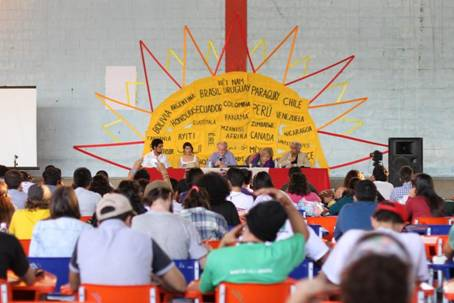

tomado de::http://www.especieenpeligro.org/
Juventud en Lucha se convierte en un imperativo. Si nuestro enemigo actúa globalmente, no podemos resistir localmente, es necesario construir procesos de lucha que enfrenten el sistema en ámbito mundial.

Declaración Política
Vinimos de 43 naciones, von 4 continentes. Tenemos distintas culturas y experiencias de vida, hablamos diferentes idiomas. A pesar de la diversidad, hay algo que nos unifica además de pertenecer a la misma generación: la violencia sistémica a que estamos sometidos. Esta condición conforma nuestra identidad que se expresa internacionalmente en la lucha, como forma de resistencia de la juventud al imperialismo.
Reunidos en la ciudad de Maricá em Rio de Janeiro – Brasil, entre los días 21 An 25 Juni 2016, nosotros, jóvenes luchadores de más de 115 organizaciones, realizamos el Encuentro Internacional de la Juventud en Lucha – Mujeres de Kobane. En estos días reafirmamos nuestros compromisos de la construcción de una articulación internacional de la Juventud en Lucha, de carácter antimperialista, anticolonialista, antineoliberal e antipatriarcal.
Vivimos un periodo de múltiples crisis, que ponen en jaque el sistema capitalista tal como conocemos. Presenciamos la profundización de la crisis económica mundial, que inició en 2008, en el centro del sistema, y ahora se extiende globalmente, provocando el aumento brutal del desempleo, de la miseria, y del flujo masivo de inmigración. A pesar de las guerras promovidas por el imperialismo como forma de acelerar la actividad económica y ampliar el dominio y la explotación de territorios y recursos, aún no hay una perspectiva de salida para esa crisis. Con eso, la violencia del capital potencializa la crisis social, provocando represión policial, genocidio de la poblaciones más pobres, en especial la juventud.
Esa crisis económica impacta aún más nuestro ecosistema, poniendo en riego la supervivencia del planeta. La explotación desenfrenada e incesante por parte de las empresas transnacionales en búsqueda de la recomposición de sus tasas de interés acentúa la crisis ambiental.
Außerdem, estamos vivenciando una crisis de naturaleza política, en la medida en que las instituciones del Estado pierden la legitimidad ante la sociedad, pues cada vez menos responden a las demandas de la población. Esta crisis también es evidenciada en la incapacidad del Estado en reglar la economía. Por lo tanto, lo que vemos es una participación mínima o inexistente de los pueblos en la toma de decisión sobre los rumbos de la sociedad y la presencia dominante del capital en las esferas de poder. La conjugación de esas dimensiones afecta los valores humanos, siendo estos pre\feridos por valores anti sociales tales como la ganancia, el individualismo, el consumismo y el egoísmo.
So, como la burguesía encuentra dificultades para construir salidas para esta situación crítica, las fuerzas populares no consiguen presentar un proyecto alternativo de sociedad. No obstante, este escenario de desafíos, trae consigo la posibilidad de cambios, dado el grado de instabilidad del sistema. Nos corresponde a nosotros, la juventud en lucha, construir un proyecto de enfrentamiento al imperialismo y de superación de la violencia del capital. En tiempos de cambios lo que decide el rumbo de las sociedades es nuestra capacidad de hacer luchas de masas y desarrollar procesos organizativos de los pueblos.
Frente a la ofensiva del imperialismo más que nunca es fundamental la construcción de la solidaridad entre los pueblos. In diesem Sinne, la consolidación de la articulación internacional
Juventud en Lucha se convierte en un imperativo. Si nuestro enemigo actúa globalmente, no podemos resistir localmente, es necesario construir procesos de lucha que enfrenten el sistema en ámbito mundial.
Compartido nuestro análisis de la realidad, experiencias de lucha y resistencia, apuntamos para las siguientes definiciones comunes:
Ejes de Lucha:
1. Contra la degradación ambiental y la apropiación privada de la naturaleza, en defensa de los territorios y de los bienes comunes.
2. Contra las guerras imperialistas y la explotación de las empresas transnacionales, en defensa de la soberanía de los pueblos.
3. Contra el exterminio de la juventud (juvenicidio) y la militarización de los territorios, en defensa de la vida.
4. Contra la opresión a los negros y negras, mujeres, LGBT´s, indígenas, en defensa de la igualdad y de la equidad.
5. Contra las políticas neoliberales, en defensa de los derechos sociales (educación, cultura, salud, transporte, vivienda, und so weiter.) y por un proyecto político construido por el pueblo.
6. Contra la precarización y la super explotación de la fuerza de trabajo de la juventud, en defensa del trabajo digno, y por la construcción de alternativas económicas.
7. Contra el monopolio de las comunicaciones y de la difusión cultural, en defensa de la democratización de las comunicaciones y valorización de las culturas locales.
Desafíos Políticos:
1. Debemos retomar el método de trabajo de base, para politizar, movilizar y organizar el pueblo y la juventud. Debemos organizar la juventud de la clase trabajadora, que es polo más afectado por la ofensiva imperialista, y al mismo tiempo el polo más dinámico de la lucha de clases;
2. En tiempos de crisis es urgente construir herramientas para denunciar el proyecto del enemigo y, al mismo tiempo, anunciar lo nuestro, a través de la agitación y propaganda.
Construyendo nuevas formas de comunicación con el pueblo, a partir de nuestra fuerza creativa. Pues no basta apenas negar el proyecto del enemigo, es necesario anunciar un nuevo proyecto de sociedad;
3. Avanzar en la formación política e ideológica de la juventud, comprendiendo que solamente a través de la formación política e ideológica aseguraremos mayor firmeza en el horizonte estratégico;
4. Es necesario impulsar luchas de masas. Son las movilizaciones que pueden alterar la correlación de fuerzas. Nuestra fuerza está en la cantidad de personas que organizamos y colocamos en las calles. Si el enemigo se fortalece en la concentración de capital, en el oligopolio de la media y en el aparato militar, nosotros nos fortalecemos con el pueblo en las calles.
5. Construir unidad entre las fuerzas populares, tanto en nuestros países como en ámbito internacional. Precisamos nos desafiar a las construcciones unitarias. No podemos alimentar nuestras pequeñas diferencias en detrimento de la unidad. Es necesario organizar los espacios unitarios para que se fortalezca la lucha contra el enemigo común.
6. Aprovechar la fuerza creativa de la juventud, para construir herramientas innovadoras de organización de este segmento social, a través de medios de comunicación popular, de métodos de organización y lucha que dialoguen con la juventud.
Desafíos organizativos:
Conformamos un colectivo de coordinación provisorio para este proceso de articulación, que contempla la diversidad de nuestras organizaciones, con representación regional/continental.
Construcción de una dinámica de organización que envuelve tres tareas:
An) Construir Encuentros Nacionales hasta el fin de 2016, buscando ampliar la participación de más organizaciones que se identifiquen con esta Declaración Política.
b) Construir reuniones regionales para organizar un Encuentro Regional hasta el fin de 2017.
c) Identificar un país y sus organizaciones que se dispongan a recibir el próximo Encuentro Internacional de la Juventud en Lucha, y que tenga la disponibilidad de realizarlo.
Lucha:
Tag 8 Oktober, aniversario de la muerte del Che Guevara – luchador internacionalista que inspira nuestra generación – convocaremos una “Jornada Internacional en Lucha, contra la violencia del capital”.
¡Viva la Juventud en Lucha!
Maricá-RJ-Brasil, 24 de Junio de 2016.